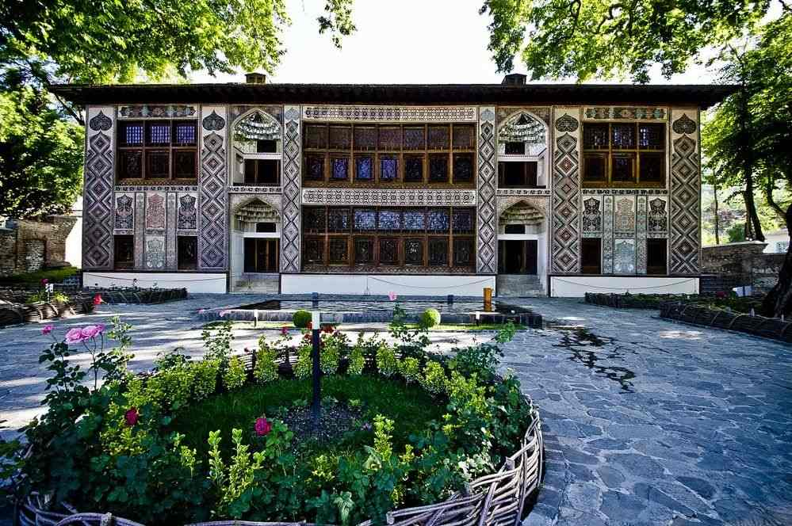
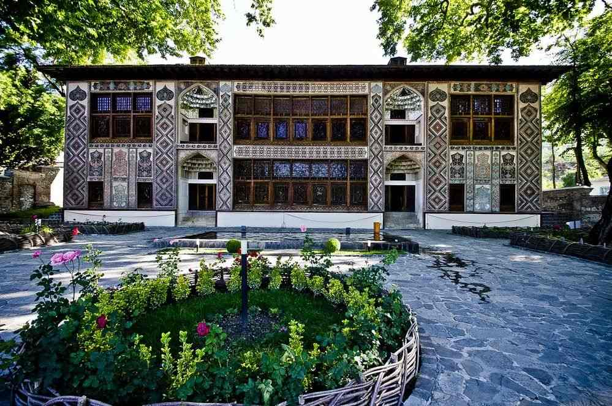
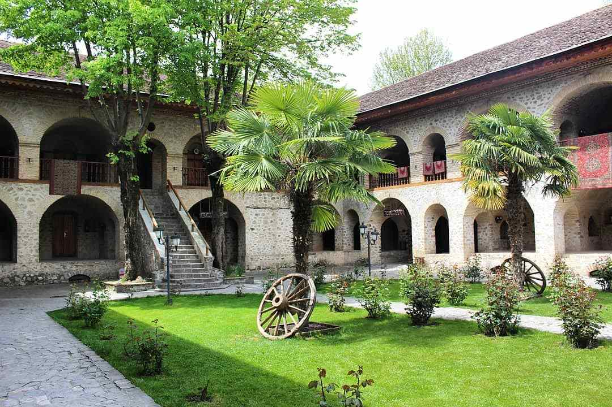
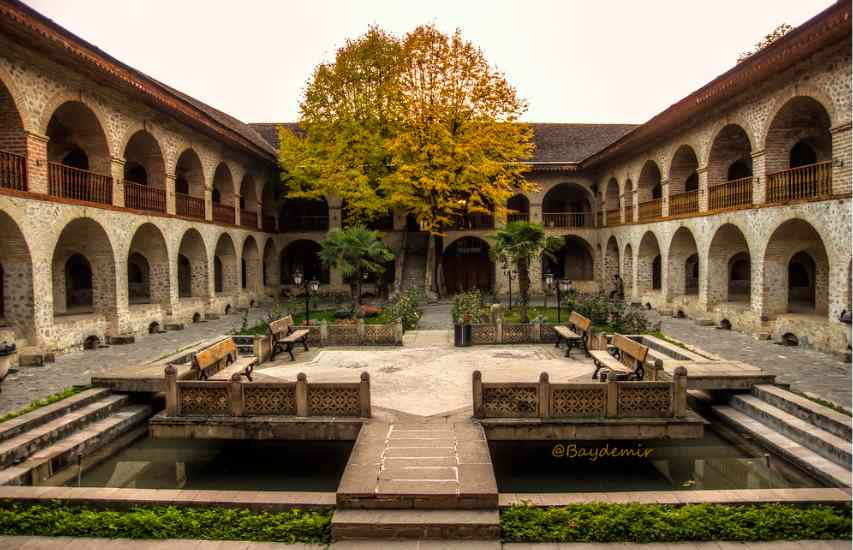
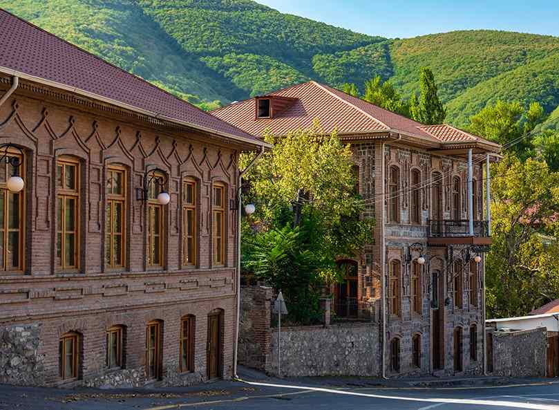
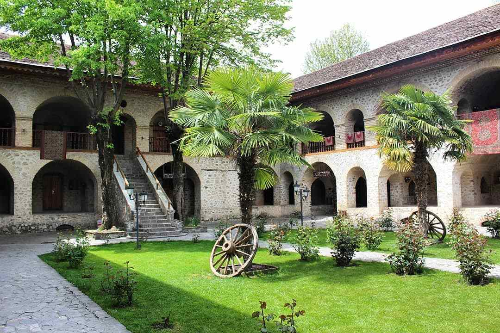
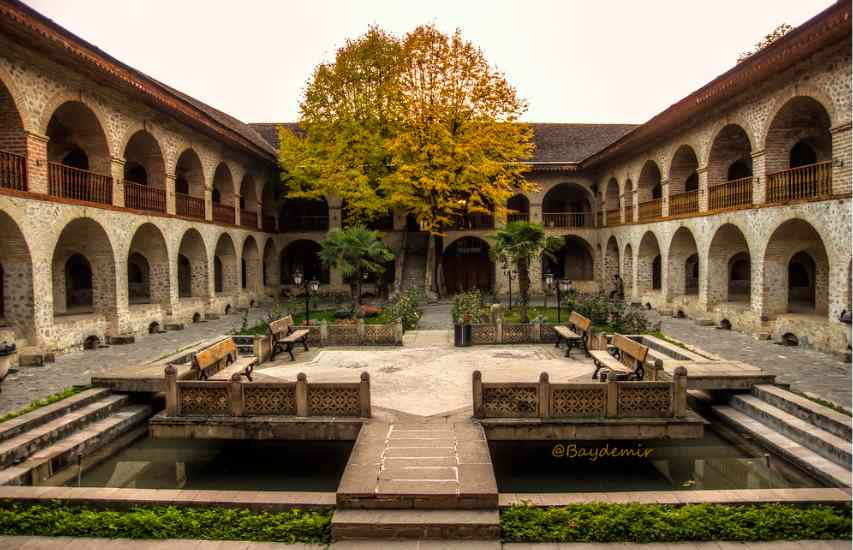
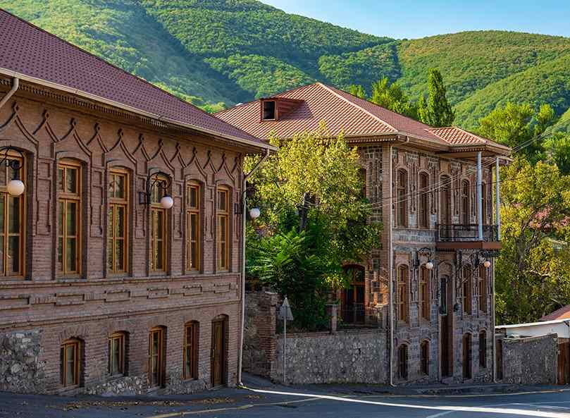

 





Şeki'nin tarihi, MÖ 7. yüzyıla kadar uzanır. Bölge, eski çağlardan beri çeşitli medeniyetlerin ve krallıkların etkisi altında kalmıştır. Şeki, tarih boyunca önemli bir ticaret ve kültür merkezi olmuştur. İpek Yolu'nun önemli duraklarından biri olan Şeki, bu dönemde ekonomik olarak büyük bir gelişim göstermiştir. Şeki Hanlığı döneminde şehir, kültürel ve mimari açıdan önemli eserler kazanmıştır.
Şeki, Azerbaycan'ın kuzeybatısında yer alan tarihi ve kültürel açıdan zengin bir şehirdir. Kafkas Dağları'nın eteklerinde, Gürcistan sınırına yakın bir bölgede bulunmaktadır. Şeki, doğal güzellikleri, tarihi yapıları ve kültürel mirası ile ünlüdür. Şehir, aynı zamanda zengin bir tarım bölgesi olan Şeki-Zaqatala ekonomik bölgesinin bir parçasıdır.
Şeki, doğal güzellikleri ile de ünlüdür. Şeki'nin çevresinde yer alan dağlar, ormanlar ve nehirler doğa severler için ideal bir ortam sunar. Şeki'de yer alan Ilisu Şelalesi ve Şeki Nehri, bölgenin doğal güzelliklerini keşfetmek isteyenler için popüler destinasyonlardır.
Şeki, Azerbaycan mutfağının lezzetlerini sunan zengin bir gastronomi kültürüne sahiptir. Şeki'de tatmanız gereken başlıca yemekler arasında piti (kuzu eti ve nohutla yapılan bir tür güveç), Şeki pakhlavası (şehriye ile yapılan tatlı) ve Şeki halvası bulunmaktadır. Bu lezzetler, yerel mutfağın benzersiz tatlarını keşfetmenize olanak sağlar.
Şeki'nin nüfusu resmi verilere göre 175.000 den fazladır. Şehir, Şeki Rayonu'nun (ilçe) merkezidir ve bölgenin en büyük yerleşim yeridir. Nüfusun büyük çoğunluğu Azerbaycanlılardan oluşurken, şehirde Ruslar, Lezgiler ve diğer etnik gruplar da bulunmaktadır. Bu demografik çeşitlilik, Şeki'nin kültürel zenginliğine katkıda bulunur.